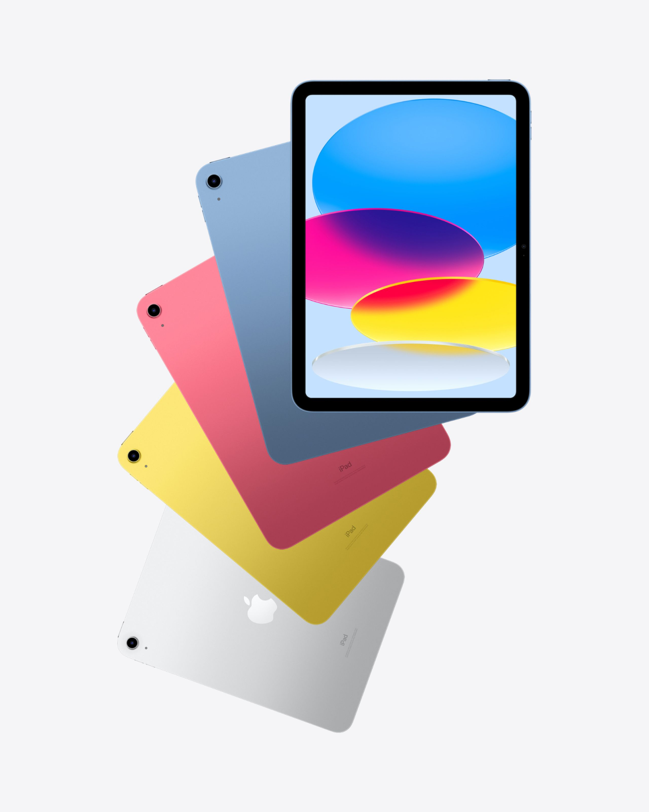
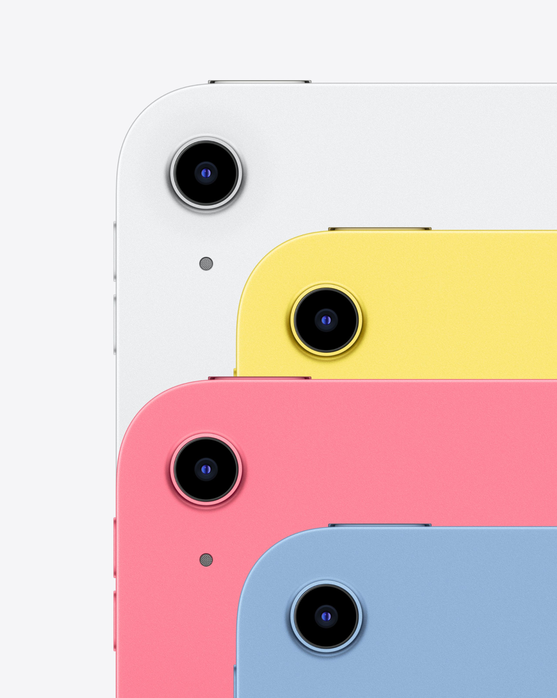
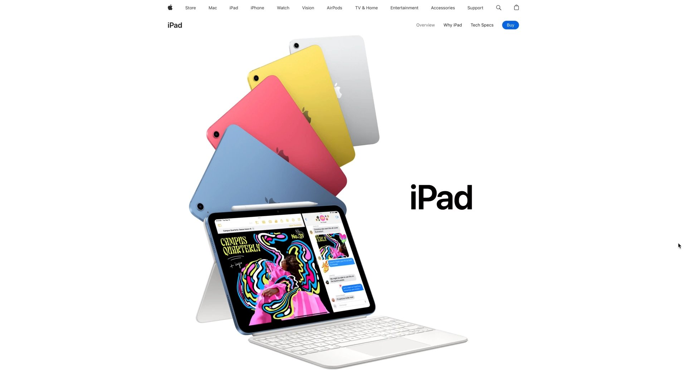
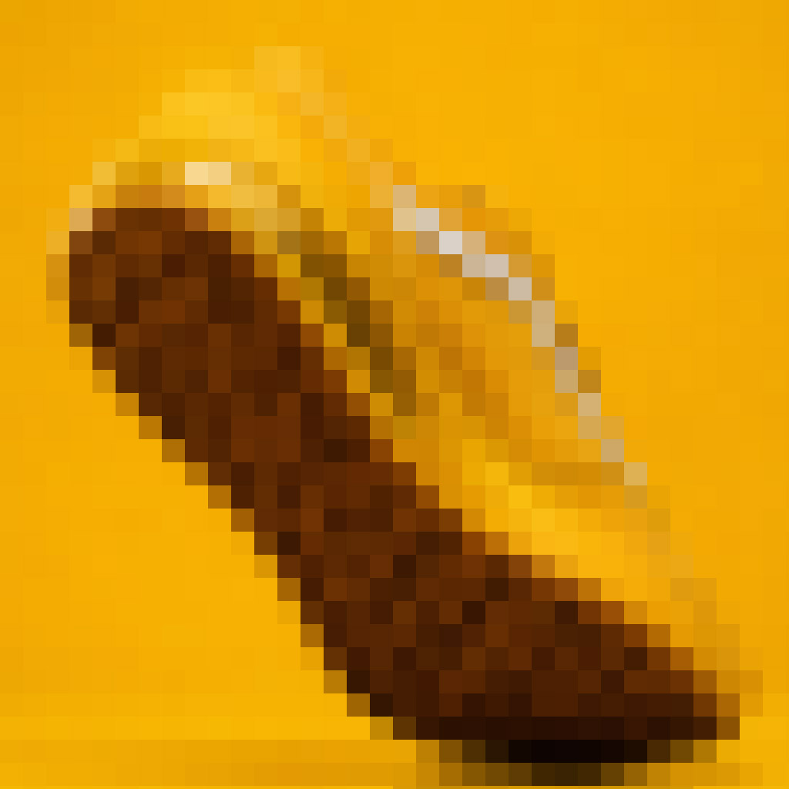
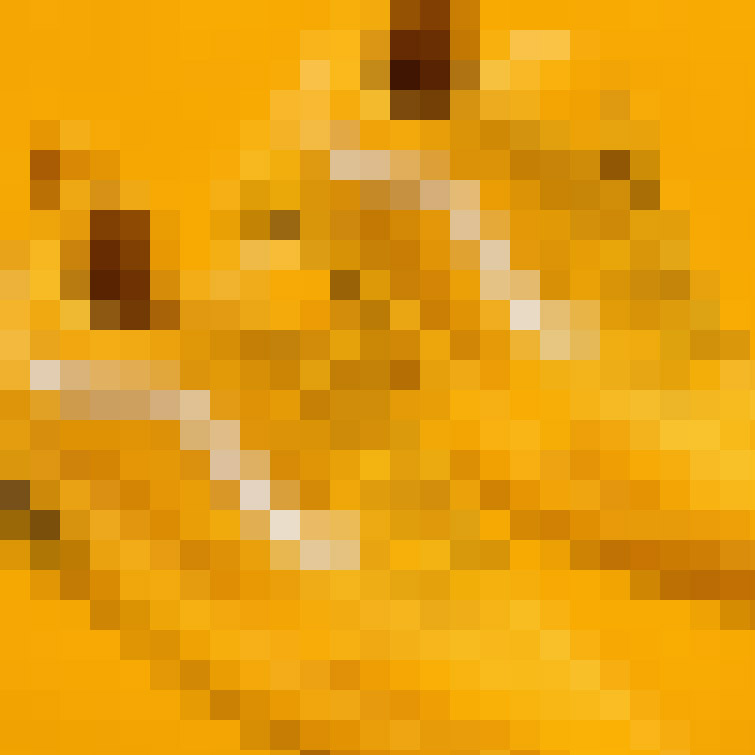
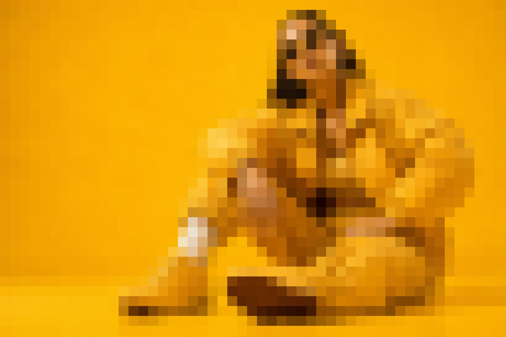

Architected the KX 200 suite for BendixKing, translating the tactile rhythm of legacy cockpit radios into a scalable, multi-variant digital interface system.
From Muscle Memory to Mission Logic.
The KX 200 required a familiar BendixKing radio lineage to gain modern digital capability without adding new cognitive load in flight.
My work focused on translating tactile memory, mode logic, hardware constraints, regulatory clarity, and multi-variant complexity into one operating model pilots could trust without studying.
In aviation, novelty is not automatically progress. New capability had to preserve the physical confidence pilots already had.


The safest interface was not the newest one. It was the one pilots already trusted.
The KX 200 inherited its behavioral gravity from the KY196B, a legacy radio model built around physical rhythm, tactile certainty, and fast frequency control. Pilots had already internalized how their hands, eyes, and instruments should relate under pressure, so the challenge was not to modernize at the expense of that instinct. It was to protect it. Deeper functionality, richer states, and more system intelligence had to fit around behavior pilots already trusted.
Physical controls stayed anchored while digital states expanded around them, allowing the system to grow without forcing pilots to relearn the relationship between action and response. Every new state had to earn its place by respecting existing spatial memory.

Operating Model
Temporary section headline for the decision architecture behind the interface.
This placeholder copy is here to establish the production rhythm for the final case study. Use this section for the strategic shift, the constraint that mattered most, and the operating principle that governed downstream decisions.
At final content pass, this area should explain what changed in the product model, not simply what screens were produced. The goal is to read as executive-level product judgment supported by concrete design evidence.
Copy Layout 01
Framing the problem from market pressure to product behavior.
Use this block when the story needs a concise strategic setup before moving into artifacts. The first column can carry the decision, while the adjacent copy explains the consequence for users, operations, or the business.
Showing why the work mattered before showing how it looked.
This companion column can hold proof: research signal, product constraint, risk, or outcome. It keeps the reader moving across a deliberate argument rather than dropping them into process detail too early.
Copy Layout 02
Large thesis with two supporting copy blocks on the right.
This layout is useful for a high-level claim that needs two kinds of evidence. One paragraph can define the design principle, while the second explains how that principle changed execution.
It also works well for research synthesis, product strategy, or implementation constraints where the reader needs a clear hierarchy and a balanced scan path.
Decision
Preserve known cockpit rhythm instead of introducing novelty for its own sake.
Constraint
Every state had to fit physical controls, limited screen space, and certification-grade clarity.
System
One operating grammar could scale across communication, navigation, and transponder variants.
Outcome
The final interface could expand capability without asking pilots to relearn trusted behavior.
Copy Layout 04
A sequence layout for research, product decisions, or build phases.
01
Establish the operational environment and identify which behaviors already carry trust.
02
Translate those behaviors into interface rules that can scale across variants without fragmenting the system.
03
Validate the rules in context, then turn the proven behavior into implementation-ready documentation.
The strongest portfolio pages read like product judgment supported by evidence, not a gallery with captions.
This layout can hold a senior-level interpretation of the work. It gives room for a strong claim, then supports it with focused explanation that keeps the reader oriented.
Use it near the end of a case study when the page needs to consolidate lessons, outcomes, or what the project proves about the way you lead product design.







Sticky editorial note for an important product decision.
This pinned block can hold a concise explanation while the image column carries detailed visual proof. It is designed for director-level reading: fast thesis, then evidence.
Temporary statement section for the strongest outcome, written as a product leadership claim rather than a design-process caption.